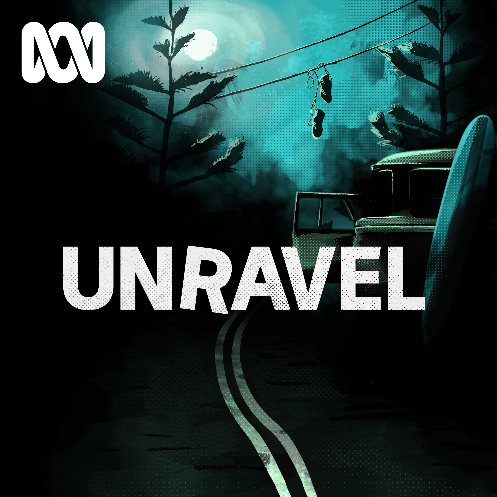

Cases


Podcasts we are loving

The Teacher's Pet
Lyn and Chris Dawson appear to have the perfect marriage. He's a star footballer and popular high school teacher. She's a devoted wife and mother. They share a beautiful home above Sydney's northern beaches. But when Lyn goes missing, dark secrets are buried. This is no fairytale, but a sordid story of strangely close twin brothers, teenage student lovers, and probable murder. The Australian's Hedley Thomas digs deep into a cold case which has been unsolved for 36 years, uncovering startling new evidence.
Unravel True Crime
Unravel is a podcast where, each season, some of Australia's best journalists investigate unsolved crimes. The first season goes back to 1988. Just outside of Tamworth in country New South Wales, a freight train hits someone lying on the tracks. The boy on the tracks is Mark Haines, a 17 year-old Gomeroi teenager. Despite the strange evidence found at the scene of his death, the family feel like they're being ignored by police. An inquiry finds no answers and the mystery is left to fester, causing division and suspicion in the town. Season 2 is Barrenjoey Road,. On a regular Saturday night in June 1978, 18-year-old Trudie leaves a party at Newport Surf Club just after midnight. Thumbing a ride on Barrenjoey Road, she is picked up... and never seen again. But Trudie's disappearance is just the start of this mystery. In the weeks and months after she goes missing, other women come forward to tell the police terrifying stories of abduction and rape.
Serial
A high-school senior named Hae Min Lee disappeared one day after school in 1999, in Baltimore County, Maryland. A month later, her body was found in a city park. She'd been strangled. Her 17-year-old ex-boyfriend, Adnan Syed, was arrested for the crime, and within a year, he was sentenced to life in prison. The case against him was largely based on the story of one witness, Adnan’s friend Jay, who testified that he helped Adnan bury Hae's body. But Adnan has always maintained he had nothing to do with Hae’s death. Some people believe he's telling the truth. Many others don't.

Up and Vanished
Up and Vanished is an investigative podcast that explores the unsolved disappearance of Georgia beauty queen and high school teacher, Tara Grinstead. The 11-year-old cold case is the largest case file in the history of Georgia. Follow along as host Payne Lindsey, a filmmaker turned amateur investigator, examines old case evidence and re-interviews persons of interest. What happened to Tara Grinstead?